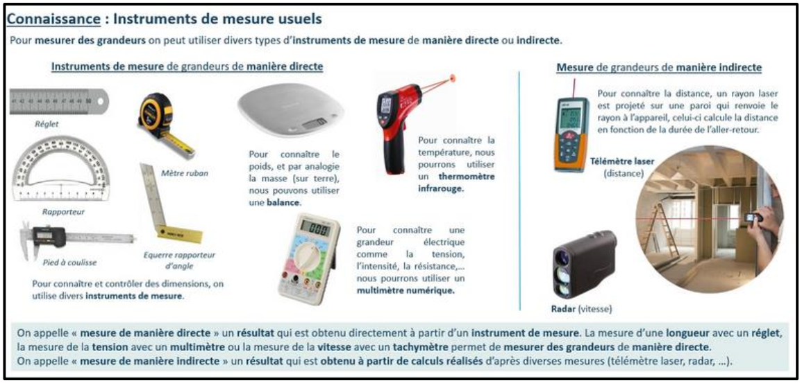
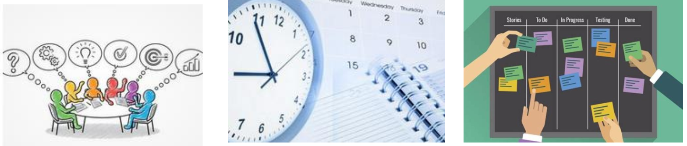

Ce que vous allez faire
🔍 Comprendre
Choisir un objet technique dans la liste et trouver les étapes clés de son évolution : dates, inventeurs, ce qui change et pourquoi.
💡 Imaginer
Concevoir le produit du futur : cohérent avec l’histoire de l’objet, durable, avec une innovation majeure et un fonctionnement plausible.
🤝 S’organiser
Se répartir les tâches, planifier avec un diagramme de Gantt, ajuster en cours de route et le justifier.
3 séances de 3 heures
Chaque séance a un objectif précis et un point d’étape à valider avant de partir. Le travail non terminé se poursuit à la maison.
Lancer le projet
Former le groupe, choisir l’objet, comprendre le cahier des charges, construire le Gantt prévisionnel, débuter les recherches.
Séance 2Produire
Compléter la frise, croiser les sources, imaginer le produit du futur, choisir la charte graphique, maquetter l’affiche.
Séance 3Finaliser et rendre
Mise en page A3, vérification du cahier des charges, Gantt effectif, ajustements justifiés, impression.

Vos outils
📊 Diagramme de Gantt
Fiche outil + outil interactif : prévisionnel, effectif, répartition et écarts.
👥 Travail de groupe
Rôles, règles de fonctionnement et tableau Kanban de suivi des tâches.
🎨 Charte graphique
Polices, couleurs, contrastes : rendre l’affiche lisible et soignée.
🔎 Exemple complet
L’évolution de la « reproduction du son » : la structure à imiter.
✅ Barème d’évaluation
Les critères sur 20 points, pour vous autoévaluer avant de rendre.
À rendre en fin de projet
🖼 L’affiche A3
Fonctionnement, évolution (frise chronologique) et croquis du futur.
📁 Le dossier
Planning prévisionnel, planning réel avec ajustements justifiés, répartition des tâches.
Vérifier votre capacité à travailler en groupe, planifier, partager des tâches et organiser votre travail. L’affiche compte, mais la manière dont vous vous êtes organisés compte autant.